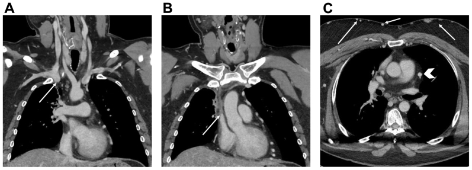
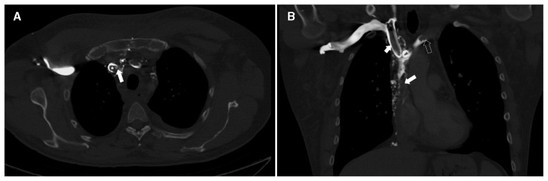
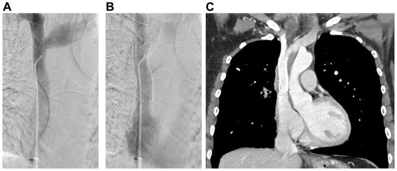
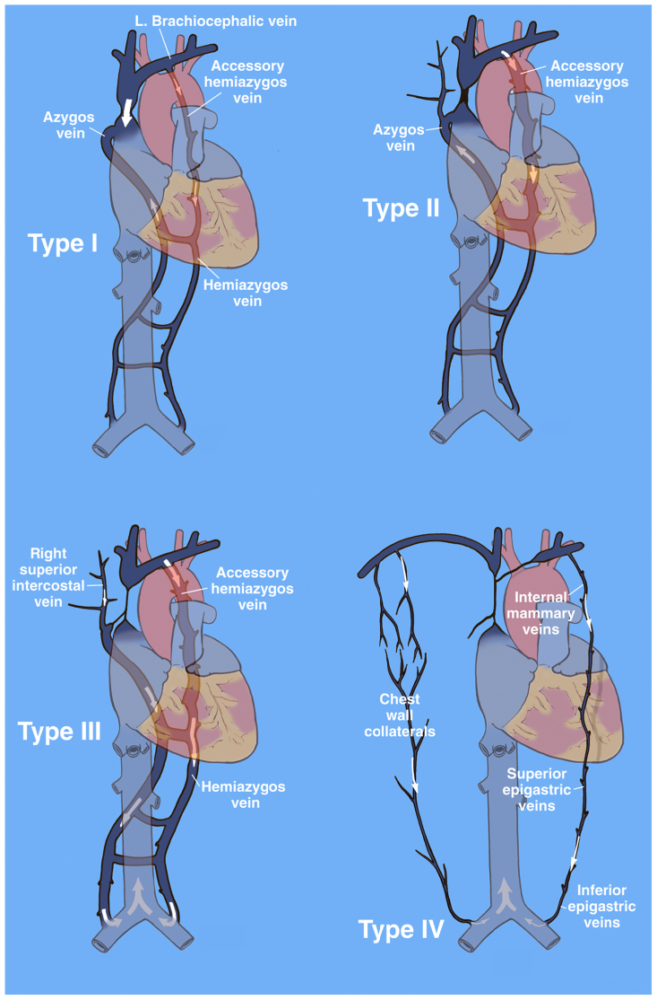

093 — Hội chứng tĩnh mạch chủ trên / Superior vena cava syndrome (SVCS)
Tags: pattern:hep-tinh-mach pattern:tuan-hoan-bang-he vung:trung-that protocol:CTV-nguc protocol:stent-tinh-mach score:Stanford-Doty score:Kishi
Mức chắc chắn (certainty): tổng hợp y văn (literature synthesis) — 1 review hệ thống có thống kê gộp (Sen I et al., J Vasc Surg Venous Lymphat Disord 2026, PMC13098589), 1 tổng quan (umbrella review) về phân độ và xử trí (Shah RP et al., Cureus 2023, PMC10439982), và 1 ca nguyên văn dùng làm hình (Morriello F et al., CMAJ 2023, PMC9851630). Số nào nguồn không nêu thì ghi "chưa rõ" — không bịa.
1. Tổng quan bệnh học – cơ chế hình ảnh
- Giải phẫu tạo ra bệnh: tĩnh mạch chủ trên (superior vena cava — SVC) dài 7,1 ± 1,4 cm, đường kính 2,1 ± 0,7 cm trên CT (thay đổi theo thể tích), dẫn khoảng 1/3 lượng máu tĩnh mạch về tim (Shah RP et al. 2023). Thành mỏng, áp lực trong lòng thấp, lại nằm trong trung thất trước giữa xương ức và khí quản → bất kỳ khối nào to lên trong khoang này cũng đè xẹp trước khi kịp "phá" thành mạch.
- Ngưỡng định lượng (cửa 1 của Argon): diện tích cắt ngang SVC < 1,07 cm² được dùng làm ngưỡng chẩn đoán hẹp/chèn ép SVC trên CT (Shah RP et al. 2023). Đo bằng diện tích, không đoán bằng mắt — vì lòng mạch hình bầu dục nên đường kính 1 chiều đánh lừa.
- TẠI SAO triệu chứng nặng lên khi nằm ngửa: tắc SVC làm áp lực tĩnh mạch não–mặt–cổ tăng; nằm ngửa bỏ mất trợ giúp của trọng lực nên ứ càng nặng → bệnh nhân phải kê nhiều gối, không nằm phẳng được, cúi người khó (Sen I et al. 2026). Đây là dấu hỏi lâm sàng rẻ tiền nhất và cũng là dấu quyết định cấp cứu.
- TẠI SAO nguy hiểm không nằm ở "tắc mạch" mà ở phù đường thở: dịch ứ gây phù thanh quản/hầu, khí quản; hội chứng SVC cấp có suy hô hấp, rối loạn ý thức, hôn mê là cấp cứu đe dọa tính mạng (Sen I et al. 2026). Tử vong vì ngạt và phù não, không vì thiếu máu não do thiếu cung cấp.
- TẠI SAO hẹp nặng mà bệnh nhân vẫn "bình thường": 4 đường bàng hệ — (1) azygos–hemiazygos (qua liên sườn–thắt lưng, đường quan trọng nhất), (2) ngực trong (qua thượng vị và tĩnh mạch ngực nông), (3) ngực bên (qua mạch mũ nông → tĩnh mạch hiển lớn–đùi), (4) đốt sống–cạnh đốt sống; thể rất nặng có đường "hot quadrate sign" nối thượng vị–ngực trong (Shah RP et al. 2023). Vì vậy mức độ triệu chứng KHÔNG tương quan với mức độ hẹp giải phẫu khi đã có bàng hệ phong phú — câu này phải nói với đồng nghiệp trước khi đặt stent.
- TẠI SAO phân biệt "u xâm lấn" với "huyết khối lành tính" lại quyết định điều trị: u/lymphoma chèn ép hoặc xâm lấn từ ngoài → lòng mạch hẹp nhưng không có cục máu trong lòng; stent đặt vào sẽ bị u mọc xuyên qua lưới (vì vậy review khuyến nghị stent có màng che — covered stent cho bệnh ác tính). Ngược lại huyết khối do catheter/máy tạo nhịp là dị vật trong lòng → phải rút bỏ dị vật trước/đồng thời, nong bóng ± stent; đặt stent mà để nguyên đầu dây là mời tái hẹp (Shah RP et al. 2023; Sen I et al. 2026).
- Dịch tễ định lượng: u ác tính ~60% ca; nguyên nhân iatrogenic (huyết khối/hẹp do catheter, máy tạo nhịp, ICD) 30–40%; 28% ca SVCS gắn với một dụng cụ/đường truyền (Rice et al., dẫn trong Shah RP et al. 2023); SVCS là biến chứng ở 0,1–3,3% người mang máy tạo nhịp. Ở người lớn tuổi, ung thư là nguyên nhân hàng đầu (đặc biệt ung thư phổi tế bào nhỏ, sau đó lymphoma không Hodgkin, rồi di căn trung thất).
- Giá trị của CT: CT có cản quang độ nhạy 96%, độ đặc hiệu 92% cho chẩn đoán SVCS, và trả lời được 3 câu mà siêu âm không trả lời được: trong lòng hay ngoài lòng, dài bao nhiêu, có bàng hệ nào (Shah RP et al. 2023). Siêu âm Duplex không thấy được SVC vì bị xương sườn và phổi che.
2. Mẫu hình + chẩn đoán phân biệt theo vị trí (gamut)
Câu hỏi thực hành: hẹp/tắc ở tầng nào và do cái gì? Hai trục này quyết định cấp cứu hay không và đặt stent hay không.
Trục A — theo tầng so với tĩnh mạch azygos (vì azygos là "cửa thoát" duy nhất còn lại):
- Trên azygos (supra-azygos): máu vẫn về tim qua azygos → thường dung nạp tốt hơn, bàng hệ liên sườn–azygos giữ được dòng.
- Ngang azygos: nặng nhất về triệu chứng — không còn đường nào vào SVC, máu buộc phải đi qua bàng hệ xuống tĩnh mạch chủ dưới.
- Dưới azygos (infra-azygos): máu azygos phải chảy ngược xuống tĩnh mạch chủ dưới → giãn tĩnh mạch thực quản/trung thất dưới, phù rõ.
Phân độ venography Stanford–Doty (chuẩn hay dùng nhất khi can thiệp):
| Type | Tổn thương | Dòng azygos | Ý nghĩa thực hành |
|---|---|---|---|
| I | Hẹp khít SVC nhưng dòng còn đi đúng chiều | Xuôi bình thường | Bàng hệ qua hemiazygos/accessory hemiazygos; thường nhẹ |
| II | Hẹp > 90% hoặc tắc SVC | Azygos còn thông, dòng xuôi | Còn "van an toàn" — can thiệp có kế hoạch |
| III | Tắc SVC lan tới azygos, azygos chảy ngược | Đảo chiều | Nặng, bàng hệ ngực–thành ngực rõ |
| IV | Tắc lan cả brachiocephalic hai bên + azygos | Không còn azygos | Nặng nhất; thường phải can thiệp nhiều thì |
(Nguồn: Sen I et al. 2026, Fig. 5; đối chiếu Stanford & Doty 1986.)
Trục B — theo nguyên nhân (gamut):
- Ác tính (60%): ung thư phổi (đặc biệt tế bào nhỏ) chèn ép/xâm lấn, lymphoma không Hodgkin (khối xâm lấn–co kéo), di căn trung thất, u tuyến ức, u màng phổi trung thất.
- Lành tính do dụng cụ (30–40%): huyết khối quanh catheter tĩnh mạch trung tâm, máy tạo nhịp, ICD; hẹp do xơ hóa quanh đầu dây.
- Lành tính không do dụng cụ: xơ hóa trung thất (fibrosing mediastinitis) — thường do lao/nấm sợi, hẹp không đều, co kéo, có vôi hóa; hẹp sau xạ trị; bướu giáp sau xương ức; phình/bóc tách quai động mạch chủ; bệnh tăng đông, Behçet.
3. Bảng so sánh phân biệt (ma trận đối chiếu)
| Thực thể (entity) | Hình ảnh điển hình (CTV/CT) | Chốt vào (rule-in) | Chốt loại (rule-out) | Gợi ý xác nhận |
|---|---|---|---|---|
| U/lymphoma xâm lấn–chèn ép | Khối mô mềm trung thất phải liên tục với thành mạch, lòng SVC hẹp từ ngoài vào, bờ ngoài gồ ghề; bàng hệ trung thất | Khối mô mềm áp vào SVC + SVC hẹp nhưng KHÔNG có hình khuyết trong lòng | Có khuyết trong lòng + dị vật (catheter/đầu dây) → huyết khối | Sinh thiết trước xạ/hóa; PET-CT |
| Huyết khối quanh catheter/đầu dây | Khuyết thuốc trong lòng SVC/brachiocephalic, thấy catheter/đầu dây đi xuyên qua ổ khuyết; tĩnh mạch giãn | Dị vật trong lòng + khuyết thuốc bám quanh dị vật | Khối mô mềm ngoài lòng, không dị vật → u/xơ | Rút dị vật ± nong bóng/stent; siêu âm tĩnh mạch cổ tay |
| Xơ hóa trung thất | Đám mô mềm co kéo, không đều, vôi hóa, hẹp nhiều đoạn (SVC + nhánh phổi + phế quản); thường có tiền sử lao/nấm | Vôi hóa + co kéo + hẹp nhiều tầng | Khối tròn, phát triển nhanh, không vôi → u | CT so phim cũ; không sinh thiết mù (nguy cơ chảy máu) |
| Hẹp sau xạ | Đoạn hẹp đúng trường chiếu, thành dày xơ, không khối mới | Giới hạn hẹp trùng vùng xạ + không có khối | Có khối mới trong trường xạ → tái phát, phải lấy mô | So sánh kế hoạch xạ; PET |
| Bướu giáp sau xương ức | Tuyến giáp tăng tỷ trọng iod, đẩy–chèn SVC/khí quản, có nang/vôi | Tuyến giáp liên tục với cổ + chèn SVC | Mô mềm trung thất tách rời tuyến giáp → u khác | Siêu âm cổ; CT có/không cản quang |
| Phình/bóc tách quai ĐMC | Giãn quai > 4 cm, flap hoặc huyết khối trong lòng, đè SVC | Túi phình/flap của ĐMC | ĐMC bình thường → loại | CTA thì động mạch, ECG-gating |
| Giãn tĩnh mạch khí quản (hậu quả) | Tĩnh mạch dưới niêm mạc khí quản giãn, ho ra máu tái phát | Tắc SVC + ho máu + nội soi thấy tĩnh mạch dưới niêm mạc | Không tắc SVC → tìm nguồn động mạch (bài 091) | Nội soi phế quản; tái thông tĩnh mạch, không nút động mạch |

Nam 48 tuổi, SVCS do lymphoma không Hodgkin. (A) Coronal: khối xâm lấn–co kéo trung thất trên phải, mũi tên chỉ đoạn xa tĩnh mạch brachiocephalic phải; (B) mũi tên chỉ đầu trên SVC bị hẹp; (C) axial: chevron trắng chỉ tĩnh mạch bàng hệ màng tim, mũi tên trắng hai bên là bàng hệ thành ngực. Nguồn: Sen I et al., J Vasc Surg Venous Lymphat Disord 2026, PMC13098589 Fig. 1, CC BY-NC-ND 4.0 — dùng nguyên bản, không crop/ghép.Đọc CTV theo 4 câu hỏi cố định (tránh bỏ sót)
- Trong lòng hay ngoài lòng? — khuyết thuốc + dị vật = trong lòng; khối mô mềm ép = ngoài lòng.
- Tắc tới đâu so với azygos? — trên/ngang/dưới azygos (quyết định mức nặng).
- Bàng hệ đi đường nào? — azygos, ngực trong, ngực bên, cạnh sống (giải thích vì sao ít/nhiều triệu chứng).
- Có bao nhiêu "chỗ hẹp" và dài bao nhiêu cm? — chọn cỡ stent (bài gốc dùng stent tự bung 13 mm × 10 cm cho brachiocephalic phải + SVC, nong bóng tới 14 mm).
4. Protocol chụp + phân độ & quyết định can thiệp
CTV ngực (khảo sát chuẩn, trước mọi can thiệp):
- Lát ≤ 1 mm, cửa sổ trung thất, thì tĩnh mạch; phủ từ tĩnh mạch cổ–dưới đòn tới tĩnh mạch chủ dưới trên gan (để thấy đường bàng hệ xuống dưới).
- Đo và ghi vào phiếu: diện tích lòng SVC (cm²), chiều dài đoạn hẹp (cm), đường kính tĩnh mạch lành kế cận (mm), vị trí so với azygos, danh sách bàng hệ.
- Thông số trễ (delay) tối ưu cho thì tĩnh mạch: nguồn đã đọc không nêu số cụ thể — chưa rõ, cần tra thêm; đừng lấy số ước lượng làm chuẩn.
- IVUS (siêu âm trong lòng mạch) là bổ trợ trong lúc thủ thuật: đo cỡ mạch khi lòng bị xẹp/che khuất, đo chiều dài tổn thương, phân biệt huyết khối mềm – hẹp xơ – chèn ép từ ngoài → chọn bóng/stent (Sen I et al. 2026).
Phân độ & ngưỡng can thiệp:
| Hệ | Nội dung | Ngưỡng xử trí |
|---|---|---|
| Kishi | Chấm điểm triệu chứng | ≥ 4 điểm → đặt stent qua da; < 4 → điều trị bảo tồn sau khi cân nhắc nguyên nhân, lựa chọn khác và tiên lượng (Shah RP et al. 2023) |
| Stanford–Doty | Venography I–IV | Dùng mô tả mức tắc & chọn kỹ thuật; không phải chỉ định can thiệp |
| Azizi | I: tắc 2 brachiocephalic ± SVC trên azygos; II: tắc SVC trên azygos không lan brachiocephalic; III: tắc tại ngã ba azygos; IV: tắc dưới azygos | Dùng để trao đổi & nghiên cứu, thuận tiện hơn venography (Shah RP et al. 2023) |
flowchart TD
A[Nghi SVCS: phu mat-co, gian TM, khong nam phang duoc] --> B{Co dau hieu nang: kho tho, stridor, roi loan y thuc?}
B -->|Co| C[Cap cuu: nang dau giuong 30-45 do, tho oxy, corticoid, duong tho]
B -->|Khong| D[CTV nguc lat ≤1 mm thi tinh mach]
C --> D
D --> E{Trong long hay ngoai long?}
E -->|Trong long + di vat| F[Rut catheter/dau day + khang dong ± CDT/nong bong]
E -->|Ngoai long: u xam lan| G[Sinh thiet TRUOC khi xa/hoa chat]
G --> H{Trieu chung nang hoac Kishi ≥4?}
H -->|Co| I[Stent tinh mach co mang che ± xa/hoa tri]
H -->|Khong| J[Xa/hoa tri theo ban chat u, theo doi]
F --> K{Con hep dien hinh?}
K -->|Co| I
K -->|Khong| L[Khang dong 3-6 thang, theo doi]
I --> M[Chup lai 1 nam: stent thong?]
M -->|Hep tai| N[Nong bong/stent lai; tim u xam lan hoac xo hoa trung that]
Hiệu quả & biến chứng (số liệu để tư vấn, không hứa hẹn):
| Chỉ số | Số liệu | Nguồn |
|---|---|---|
| Cải thiện triệu chứng ngay sau stent | 97–99% | Sen I et al. 2026 |
| Thành công lâm sàng gộp (54 nghiên cứu, 2249 bệnh nhân) | 96,8%; stent thông > 90% ở 1 năm | dẫn trong Sen I et al. 2026 |
| Thành công kỹ thuật | 80–98%; hẹp lại 4,3–29,5%; tái phát 1,2–20,5% | Shah RP et al. 2023 |
| Covered vs uncovered (lành tính) | Tái phát triệu chứng 29,4% vs 60% (P = 0,044); % hẹp lại 17,9% vs 48,3% (P < 0,001) | Sen I et al. 2026 (Haddad et al.) |
| Covered vs noncovered (12 tháng) | Thông 94% vs 48% | Sen I et al. 2026 (Gwon et al.) |
| Biến chứng chung | ~9%; tử vong 1–2%; chèn ép tim 0,1–1,8% | Sen I et al. 2026; Shah RP et al. 2023 |
| Hẹp lại / tái phát (gộp 2200 ca) | 10,5% (95% CI 8,4–12,6) / 10,8% (95% CI 8,1–13,5); biến chứng 7,5% | dẫn trong Sen I et al. 2026 |
| Xạ trị | Giảm triệu chứng ~80%, nhưng 3 ngày – 4 tuần mới rõ | Shah RP et al. 2023 |
| Mổ bắc cầu | Thành công 93–100%; thông 45% / 68% / 75% ở 1/5 năm (primary/assisted/secondary); ~50% vẫn cần stent sau đó | Sen I et al. 2026; Shah RP et al. 2023 |
- Kháng đông sau thủ thuật: 3–6 tháng khi có huyết khối cấp/bán cấp (chờ nội mạc giả phủ stent); xơ hóa trung thất có thể chỉ cần kháng kết tập tiểu cầu (Sen I et al. 2026). Ở SVCS lành tính, nghiên cứu Mayo không thấy kháng đông làm giảm hẹp lại/tái phát → đừng coi là bắt buộc tuyệt đối.
- Theo dõi: siêu âm Duplex/CTV/MRV mỗi 6 tháng trong 2 năm đầu, sau đó hàng năm hoặc khi triệu chứng quay lại (vì hẹp lại hầu như luôn kèm triệu chứng).
- Cấp cứu (làm trước, hỏi sau): nằm đầu cao 30–45°, tránh cúi/tránh cổ áo chật, lợi tiểu cho triệu chứng sớm, corticoid khi có phù đường thở hoặc đang xạ trị, bảo vệ đường thở; chụp và tái thông tĩnh mạch là can thiệp giải quyết nguyên nhân.
5. Biến thể bình thường và cạm bẫy
- Biến thể bình thường: đường kính SVC thay đổi mạnh theo thể tích tuần hoàn (2,1 ± 0,7 cm) — người mất nước/hạ huyết áp có SVC xẹp giả hẹp; đừng chẩn đoán hẹp trên phim chụp lúc bệnh nhân đang tụt huyết áp. Ngoài ra bàng hệ tồn tại sau khi hẹp đã được giải quyết — bàng hệ còn thấy trên CT không đồng nghĩa can thiệp thất bại.
- Cạm bẫy 1 — tin vào mức độ hẹp: hẹp 90% mà bệnh nhân chỉ hơi phù mặt là bình thường (đã có bàng hệ); ngược lại hẹp 60% cấp tính có thể gây phù thanh quản. Đọc triệu chứng + tốc độ khởi phát, không đọc % hẹp.
- Cạm bẫy 2 — đặt stent khi còn dị vật: SVCS do máy tạo nhịp/ICD/catheter mà không rút đầu dây → tái hẹp sớm. Nguyên tắc: rút dị vật + nong bóng ± stent, theo dõi sát nếu phải cấy lại dây.
- Cạm bẫy 3 — stent có màng "nhốt" nhánh lành: đặt covered stent qua chỗ hợp lưu có thể bít tĩnh mạch brachiocephalic đối bên hoặc tĩnh mạch azygos. Đã có kỹ thuật kissing stent hai bên hoặc stent nhánh hình chữ Y, nhưng tái thông một bên thường đủ giảm phù đầu–cổ (Sen I et al. 2026).
- Cạm bẫy 4 — vỡ SVC gây chèn ép tim: một phần SVC được màng tim phủ, nên vỡ tại đây gây tamponade (tử vong 1–2%, tamponade 0,1–1,8%). Xử trí: nhận ra ngay – nong bóng kéo dài để cầm – đặt covered stent – chọc dẫn lưu màng tim dưới siêu âm.
- Cạm bẫy 5 — lấy mô SAU khi đã xạ: xạ làm mất cấu trúc mô → không còn chẩn đoán mô học được. Với u trung thất gây SVCS, sinh thiết trước khi bắt đầu xạ/hóa (Shah RP et al. 2023).
- Cạm bẫy 6 — xơ hóa trung thất bị đọc là "u tiến triển": đám xơ co kéo, vôi hóa, hẹp nhiều tầng và không to lên theo thời gian; so phim cũ là cách phân biệt rẻ nhất. Nguồn có ca minh họa xơ hóa trung thất đã đặt stent động mạch phổi trước đó (Sen I et al. 2026, Fig. 4) — đừng nhầm bó mạch–xơ với khối u mới.
6. Tự lượng giá — Blind Quiz
Ca 1 — Nam 48 tuổi, phù mặt–cổ, giãn tĩnh mạch ngực, không nằm phẳng được. Nhìn CTV coronal, trước khi đọc đáp án hãy chỉ ra tổn thương và 2 nhóm bàng hệ.
- Gợi ý lâm sàng: khởi phát trong vài tuần, có khối trung thất trên phải.
- Câu hỏi: Hẹp ở tầng nào? Trong lòng hay ngoài lòng? Bàng hệ đi đường nào? Cần lấy mô trước hay đặt stent trước?
Bấm để hiện đáp án (findings + chẩn đoán)
- Dấu hiệu: khối mô mềm xâm lấn–co kéo trung thất trên phải, làm hẹp đoạn xa brachiocephalic phải (mũi tên A) và đầu trên SVC (mũi tên B). Axial (C): bàng hệ màng tim (chevron trắng) và bàng hệ thành ngực hai bên (mũi tên trắng).
- Chẩn đoán: SVCS do lymphoma không Hodgkin xâm lấn trung thất — hẹp từ ngoài vào, không có khuyết thuốc trong lòng.
- Thứ tự đúng: sinh thiết lấy mô trước, rồi stent có màng che để giải quyết triệu chứng trong khi chờ hóa trị — vì xạ/hóa trước sẽ làm mất khả năng chẩn đoán mô học.
- Nguồn ảnh: Sen I et al., J Vasc Surg Venous Lymphat Disord 2026, PMC13098589 Fig. 1, CC BY-NC-ND 4.0 (nguyên bản, không chỉnh sửa).
Ca 2 — Nữ 42 tuổi, đang mang catheter tĩnh mạch trung tâm, phù nửa mặt phải. CT có cản quang: đâu là "thủ phạm" và vì sao KHÔNG đặt stent đơn thuần?

- Câu hỏi: Khuyết thuốc nằm trong hay ngoài lòng mạch? Có dị vật không? Bước xử trí đầu tiên?
Bấm để hiện đáp án
- Dấu hiệu: (A) axial — SVC bị tắc do catheter (mũi tên) với huyết khối bám quanh (dấu *); (B) coronal — huyết khối lan rộng ở brachiocephalic phải (mũi tên ngắn), brachiocephalic trái (mũi tên rỗng) và SVC.
- Chẩn đoán: SVCS do huyết khối quanh catheter — nguyên nhân lành tính hay gặp nhất, chiếm 30–40% ca và gắn với dụng cụ trong 28% ca.
- Vì sao không stent đơn thuần: dị vật vẫn nằm trong lòng là nidus cho huyết khối mới. Trình tự: rút catheter + kháng đông (cấp/bán cấp có thể thêm CDT hoặc hút huyết khối), chỉ nong bóng ± stent khi còn hẹp cố định sau khi hết huyết khối.
- Nguồn ảnh: Morriello F et al., CMAJ 2023, PMC9851630 Fig. 2, CC BY-NC-ND 4.0 (nguyên bản).
Ca 3 — Vẫn bệnh nhân ca 1, sau can thiệp. Đọc ảnh kiểm tra 1 năm: đâu là dấu hiệu thành công thật?

- Câu hỏi: Chênh áp trước/sau bao nhiêu thì coi là thành công? Trên CTV 1 năm, thế nào là "thông tốt"?
Bấm để hiện đáp án
- Dấu hiệu: (A,B) venography sau đặt stent — lòng mạch rộng, không tràn thuốc; (C) CTV 1 năm: stent thông rộng, bệnh nhân không triệu chứng.
- Ngưỡng: trước can thiệp chênh áp brachiocephalic–nhĩ phải 13 mmHg; sau đặt stent còn 1–2 mmHg. Đây là tiêu chuẩn khách quan của thành công huyết động (khác với "hết phù" chủ quan).
- Lưu ý: bàng hệ có thể vẫn còn thấy trên CTV dù stent thông — đừng đọc đó là thất bại.
- Nguồn: PMC13098589 Fig. 8, CC BY-NC-ND 4.0.
Sơ đồ phân độ Stanford–Doty (dùng để mô tả tổn thương khi hội chẩn):

Bấm để hiện đáp án (cách đọc 4 type)
- Type I: hẹp khít SVC, dòng azygos vẫn xuôi chiều bình thường; bàng hệ qua hemiazygos/accessory hemiazygos.
- Type II: hẹp > 90% hoặc tắc SVC, nhưng azygos còn thông, dòng xuôi.
- Type III: tắc SVC lan tới ngã ba azygos → azygos chảy ngược; bàng hệ ngực trong/thành ngực rõ.
- Type IV: tắc lan brachiocephalic hai bên + azygos → máu đi qua ngực trong → thượng vị → tĩnh mạch chủ dưới.
- Nguồn: PMC13098589 Fig. 5, CC BY-NC-ND 4.0.
Bài liên quan chéo
- 001 – Tổng quan hệ Ngực
- 010 – Giải phẫu ngực cắt lớp (trung thất, các khoang mạch)
- 060 – Khối trung thất theo ITMIG (nguyên nhân ác tính gây SVCS)
- 091 – Ho ra máu ồ ạt & nút mạch động mạch phế quản (giãn tĩnh mạch khí quản do tắc SVC — nguyên nhân ho máu không do động mạch)
- 015 – Ống/dây ICU & giả ảnh (catheter, port, đầu dây tạo nhịp)
- 070 – Thuyên tắc phổi & ĐMC cấp (chẩn đoán phân biệt khi có khuyết thuốc mạch)
Ảnh
- Tên file theo quy ước
093_<slug>_<Modality>_<SourceID>.jpg; nguồn + giấy phép từng ảnh ởimages/CREDITS.md. - Cả 4 ảnh đều CC BY-NC-ND 4.0 → dùng nguyên bản: không crop, không ghép, không vẽ chú thích lên ảnh (vì vậy bài này không có ảnh composite).
- Không tải ảnh từ AuntMinnie (chỉ dẫn link) và không dùng hình từ bài có hình của Elsevier khi chưa xin phép.
Không dùng để chẩn đoán độc lập khi chưa có người hướng dẫn.